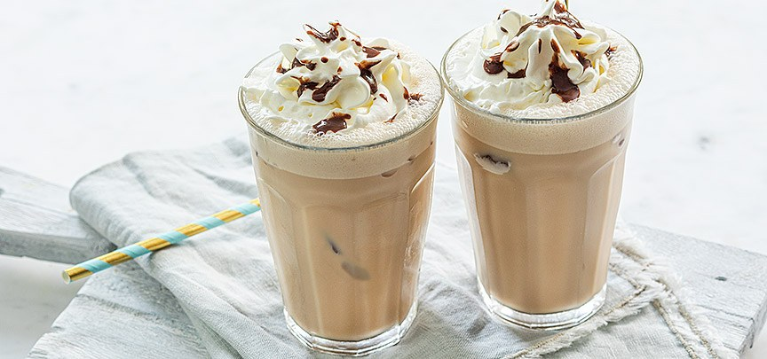

Frappuccino mokka - Nagerecht
Dit heerlijke verschijnsel is echt verrukelijk na die heerlijke gehaktbrood.
Ingredienten
- 2 kopjes afgekoelde koffie
- 200 ML melk
- 2 eetlepels suiker
- IJsblokjes
- Spuitbus slagroom
- 3 eetlepes chocolade saus
- Blender (die ijs kan mixen)
Bereidingswijze
- Doe de ijsblokjes in de blender. Voeg de koffie, melk, 2 eetlepels chocoladesaus en de suiker toe en mix door elkaar.
- Giet het in 2 glazen en spuit er een toef slagroom op en garneer met wat chocoladesaus.
